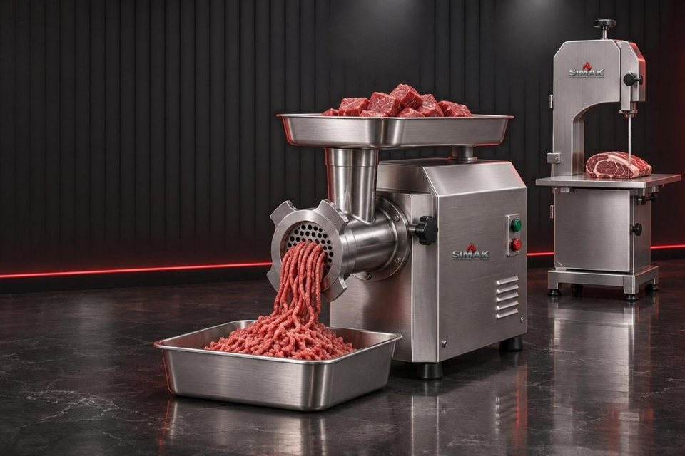

Go'sht va qassob uskunalari
Boshqa qassob jihozlari
Barcha turlari (3)
- Go'sht qiymalagichlar8 tishlidan 42 tishligacha go'sht qiymalagichlar, 220V va 380V tokka. Korpusi zanglamas po'lat, reduktoriga 1 yil kafolat, ehtiyot qismlari doim bor.Kimga mos: Uy va kichik hajm (12 tishli), qassobxona, shashlikxona va restoran (22–32 tishli), katta qassobxona, go'sht do'koni va ishlab chiqarish sexi (Turkiya 32 tishli, 42 tishli).
- Suyak arralarGo'sht va suyakni tekis kesish uchun lentali arralar, turli o'lchamlarda.
- Boshqa qassob jihozlariGo'sht va pishloq dilimlagich (slayser), mol va qo'y terisini shilish mashinasi, qo'l elektr arra.